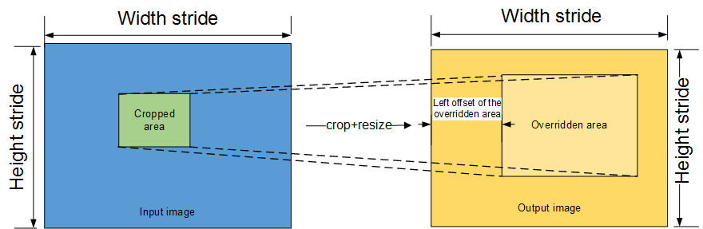
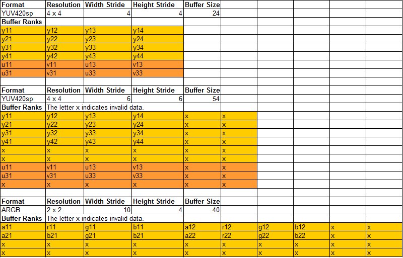

New VPC API
It is recommended to use the new VPC API. The new VPC API includes all functional modules of the VPC and CMDLIST. You are advised to use this API for development and migrate the old VPC and CMDLIST APIs to the new API.
The new API can be used to:
- Crop and scale up/down a single image.
- Perform multi-ROI cropping on an image and scaled output.
- Scale the width and height of an image by the same proportion.
- Specify the output area.
- Reduce the number of bits
- Convert the image format
- Perform overlay and stitching.
- Image gray-scale
The performance specifications of VPC channels (the number of which is not limited) are as follows:
The VPC performance will be changed when the resolution is changed during image processing, such as image cropping and scaling. When the resolution of an image is less than or equal to that of the original image, the performance specifications in the typical scenario are as follows:
When the resolution of an image is greater than that of the original image, the formula for calculating the total frame rate is as follows:
Total frame rate = (3840 x 2160 x 360)/(W x H) fps
Where, W and H are the maximum width and height during the VPC processing. For example, a 1080p image is cropped to 960 x 540 and then scaled to 3840 x 2160. In this case, W is 3840 pixels and H is 2160 pixels.
During the processing, if the scaling-down ratio is increased, the VPC processing performance slightly decreases.
Restrictions on the width and height of the input and output images:
- The width and height of the input image must be 2-pixel aligned (even numbers).
The width and height of the output image must be 2-pixel aligned (even numbers).
 NOTICE:
NOTICE:
The image width and height mentioned here refer to the valid area of an image. Actually, the buffer for the data that is sent to the VPC needs to be aligned by 128 x 16.
Restrictions on the buffers of the input and output images of the VPC:
Restrictions on the input buffer of the VPC:
- Input data address (OS virtual address): 128-byte aligned
- Buffer restriction for the input image width: 128-byte aligned
- Buffer restriction for the input image height: 16-byte aligned
 NOTE:
NOTE:
For an image in YUV400sp format, the caller must allocate a space of the same size as the YUV420sp format, that is, width_align_128 x high_align_16 x 1.5.Restrictions on the output buffer of the VPC:
- Output data address (OS virtual address): 128-byte aligned
- Buffer restriction for the output image width: 128-byte aligned
- Buffer restriction for the output image height: 16-byte aligned
The virtual addresses of the input and output caches for the same task should be in the same 4 GB space.
The following figure shows the normalization function of the new VPC API.
Figure 1 VPC normalization function

- The output image refers to the image of the output buffer allocated by users.
- The overridden area refers to the specified output area.
- The width stride of an image is not exactly the same as the width of the image resolution.
- The height stride indicates the number of lines in the buffer.
The following uses YUV420sp and ARGB and as an example.

Input Parameter: VpcUserImageConfigure
Address of an input image in uncompressed format. If the input image is in compressed format, this parameter does not need to be set. The default value is null. |
||
Buffer size of the input image in uncompressed format. The buffer size is calculated based on the width and height strides of the image. When the input image is in compressed format, this parameter does not need to be set. The default value is 0. |
||
Height stride of an image. The ratio of the stride to the width varies with the image format. |
YUV400sp, YUV420sp, YUV422sp, and YUV444sp: The width of the active area of an image is 128-pixel aligned. YUV422Packed: The result of (Width of the image active area x 2) is 128-pixel aligned. YUV444Packed and RGB888: The result of (Width of the image active area x 3) is 128-pixel aligned. XRGB8888: The result of (Width of the image active area x 4) is 128-pixel aligned. |
|
Height stride. For YUV SP images, you can use this parameter to calculate the start address of UV data. |
||
|
INPUT_YUV420_SEMI_PLANNER_UV, // 1 INPUT_YUV420_SEMI_PLANNER_VU, // 2 INPUT_YUV422_SEMI_PLANNER_UV, // 3 INPUT_YUV422_SEMI_PLANNER_VU, // 4 INPUT_YUV444_SEMI_PLANNER_UV, // 5 INPUT_YUV444_SEMI_PLANNER_VU, // 6 INPUT_YUV422_PACKED_YUYV, // 7 INPUT_YUV422_PACKED_UYVY, // 8 INPUT_YUV422_PACKED_YVYU, // 9 INPUT_YUV422_PACKED_VYUY, // 10 INPUT_YUV444_PACKED_YUV, // 11 INPUT_YUV420_SEMI_PLANNER_UV_10BIT, // 18 |
||
Cropped area configuration. For details, see VpcUserRoiConfigure. |
||
Whether the data format of the compressed image output by the VDEC is used |
When the image comes from the VDEC, set this parameter to true. For other image formats, set this parameter to false. The default value is false. |
|
Data configuration of the compressed image output by the VDEC. For details, see VpcCompressDataConfigur.... |
||
Whether to calculate the yuvSum value. The AI core has this requirement. When the yuvSum value needs to be calculated, only the mode of one ROI per image is supported. |
When the yuvSum value needs to be calculated, set this parameter to true. Otherwise, set this parameter to false. The default value is false. |
|
yuvSum calculation configuration. For details, see VpcUserYuvSum. |
||
Reserved for parameter optimization. For details, see VpcUserPerformanceTunin.... |
||
Array for the path address of the parameter set file and the file name |
The path of the parameter set file consists of the absolute file path on the device and the file name, for example, {"/root/share/vpc/YUVScaler_pra.h"}. |
|
Number of elements in the parameter set array to which the parameter set address points. The default value is 1. |
||
For the syntax of the preceding APIs, see include/inc/dvpp/Vpc.h in the DDK package. The details are as follows:
// Supported input formats
enum VpcInputFormat {
INPUT_YUV400, // 0
INPUT_YUV420_SEMI_PLANNER_UV, // 1
INPUT_YUV420_SEMI_PLANNER_VU, // 2
INPUT_YUV422_SEMI_PLANNER_UV, // 3
INPUT_YUV422_SEMI_PLANNER_VU, // 4
INPUT_YUV444_SEMI_PLANNER_UV, // 5
INPUT_YUV444_SEMI_PLANNER_VU, // 6
INPUT_YUV422_PACKED_YUYV, // 7
INPUT_YUV422_PACKED_UYVY, // 8
INPUT_YUV422_PACKED_YVYU, // 9
INPUT_YUV422_PACKED_VYUY, // 10
INPUT_YUV444_PACKED_YUV, // 11
INPUT_RGB, // 12
INPUT_BGR, // 13
INPUT_ARGB, // 14
INPUT_ABGR, // 15
INPUT_RGBA, // 16
INPUT_BGRA, // 17
INPUT_YUV420_SEMI_PLANNER_UV_10BIT, // 18
INPUT_YUV420_SEMI_PLANNER_VU_10BIT, // 19
};
// Supported output formats
enum VpcOutputFormat {
OUTPUT_YUV420SP_UV,
OUTPUT_YUV420SP_VU
};
// Data configuration in compressed format
struct VpcCompressDataConfigure
{
uint64_t lumaHeadAddr;
uint64_t chromaHeadAddr;
uint32_t lumaHeadStride;
uint32_t chromaHeadStride;
uint64_t lumaPayloadAddr;
uint64_t chromaPayloadAddr;
uint32_t lumaPayloadStride;
uint32_t chromaPayloadStride;
VpcCompressDataConfigure()
{
lumaHeadAddr = 0;
chromaHeadAddr = 0;
lumaHeadStride = 0;
chromaHeadStride = 0;
lumaPayloadAddr = 0;
chromaPayloadAddr = 0;
lumaPayloadStride = 0;
chromaPayloadStride = 0;
}
};
// Configuration of the cropped area
struct VpcUserCropConfigure {
uint32_t leftOffset; // Left offset
uint32_t rightOffset; // Right offset
uint32_t upOffset; // Up offset
uint32_t downOffset; // Down offset
uint64_t reserve1;
VpcUserCropConfigure()
{
leftOffset = 0;
rightOffset = 0;
upOffset = 0;
downOffset = 0;
}
};
// The AI core has this requirement. The total amount of each component for the output YUV image needs to be calculated.
struct VpcUserYuvSum {
uint32_t ySum;
uint32_t uSum;
uint32_t vSum;
uint64_t reserve1;
VpcUserYuvSum()
{
ySum = 0;
uSum = 0;
vSum = 0;
}
};
// Configuration of the input data for the area cropped by the user
struct VpcUserRoiInputConfigure {
VpcUserCropConfigure cropArea;
uint64_t reserve1;
};
// Configuration of the output data for the area cropped by the user
struct VpcUserRoiOutputConfigure {
uint8_t * addr; // Start address of the output image
uint32_t bufferSize; // Size of the output buffer, calculated based on YUV420sp.
uint32_t widthStride; // Width stride of the output image
uint32_t heightStride; // Height stride of the output YUV420sp image, which can be used to calculate the start address of the UV data
// Coordinates of the output area specified by the user
VpcUserCropConfigure outputArea;
uint64_t reserve1;
VpcUserRoiOutputConfigure()
{
addr = 0;
bufferSize = 0;
widthStride = 0;
heightStride = 0;
}
};
struct VpcUserRoiConfigure {
VpcUserRoiInputConfigure inputConfigure;
VpcUserRoiOutputConfigure outputConfigure;
VpcUserRoiConfigure* next;
uint64_t reserve1;
VpcUserRoiConfigure ()
{
next = nullptr;
}
};
// Reserved for performance optimization
struct VpcUserPerformanceTuningParameter{
uint64_t reserve1;
uint64_t reserve2;
uint64_t reserve3;
uint64_t reserve4;
uint64_t reserve5;
};
// Configuration for the user to invoke the VPC
struct VpcUserImageConfigure {
uint8_t* bareDataAddr; // Address of the input image in uncompressed format. When the input image is in compressed format, this parameter does not need to be set.
uint32_t bareDataBufferSize; // Buffer size, which is calculated based on the width and height of the image. If the image is in compressed format, this parameter does not need to be set.
uint32_t widthStride; // Width stride, which is used to calculate the address of the next line of image. The ratio of stride to width varies with the image format.
uint32_t heightStride; // Height stride, which is used to calculate the start address of the UV data if the image is in YUV semi-planar format.
enum VpcInputFormat inputFormat;
enum VpcOutputFormat outputFormat;
VpcUserRoiConfigure* roiConfigure; // Configuration of the cropped area. The mode of multiple ROIs per image is supported.
//Data configuration of HFBC compressed input images. Multiple values need to be set for the compressed image data. The source is the VDEC module.
bool isCompressData;
VpcCompressDataConfigure compressDataConfigure;
// The AI core has the requirement for calculating the total amount of each component of the output image. In this case, only the mode of one ROI per image is supported.
// If you want to obtain the yuvSum value, set yuvSumEnable to true.
bool yuvSumEnable; // If the yuvSum value is not required, this parameter does not need to be set. The default value is false.
VpcUserYuvSum yuvSum;
VpcUserPerformanceTuningParameter tuningParameter;//// Reserved for parameter optimization
uint32_t* cmdListBufferAddr; // Reserved
uint32_t cmdListBufferSize; // Reserved
uint64_t reserve1;
uint64_t reserve2;
VpcUserImageConfigure()
{
bareDataAddr = nullptr;
bareDataBufferSize = 0;
widthStride = 0;
heightStride = 0;
inputFormat = INPUT_YUV420_SEMI_PLANNER_UV;
outputFormat = OUTPUT_YUV420SP_UV;
roiConfigure = nullptr;
isCompressData = false;
yuvSumEnable = false;
cmdListBufferAddr = nullptr;
cmdListBufferSize = 0;
}
};
Output Parameters
None
Restrictions
- The width and height of the active area of the original image must be even numbers.
- Except 8K scaling: The minimum resolution for the cropped and overridden areas is 16 x 16, while the maximum resolution is 4096 x 4096.
- 8 KB scaling: The resolution supports up to 4096 x 4096–8192 x 8192. The only supported format is YUV420. The output resolution supports 16 x 16–4096 x 4096. In addition, 8K does not require respective 128-byte and 16-byte alignment of the image width and height strides, but 2-byte and 2-byte alignment instead.
- For the cropped area, the left offset and upper offset are even numbers, while the right offset and lower offset are odd numbers. This restriction is the same as that on the old API. The restrictions on the overridden area are the same. That is, the left offset and upper offset are even numbers, while the right offset and lower offset are odd numbers.
- The cropped area cannot be larger than the input image, and the overridden area cannot be larger than the output image.
The left offset of the overridden area relative to the output image is 16-byte aligned.
NOTE:
The overridden area can be directly mapped on the leftmost side of the output image, that is, the left offset of the output image is 0. For details, see Figure 1.The width stride of the input/output image is 128-pixel aligned, and the height stride 16-pixel aligned. The maximum width stride is the maximum resolution of an ARGB image multiplied by 4, that is, 4096 x 4.
- The buffer addresses of the input and output images are in the same 4 GB space. The first address is 128-byte aligned.
- Scaling range of the width and height: [1/32, 16]
- The maximum number of overridden areas is 256.
Calling Example
Example 1: Scaling of the original image
void nevVpcTest1()
{
int32_t ret = 0;
uint32_t inWidthStride = 1920;
uint32_t inHeightStride = 1088;
uint32_t outWidthStride = 1280;
uint32_t outHeightStride = 720;
uint32_t inBufferSize = inWidthStride * inHeightStride * 3 / 2; // 1080p YUV420sp image
uint32_t outBufferSize = outWidthStride * outHeightStride * 3 / 2; // 720p YUV420sp image
// Construct pseudo data.
uint8_t* inBuffer = (uint8_t*)HIAI_DMalloc(inBufferSize, MALLOC_DEFAULT_TIME_OUT, HIAI_MEMORY_HUGE_PAGE); // Construct an input image.
uint8_t* outBuffer = (uint8_t*)HIAI_DMalloc(outBufferSize, MALLOC_DEFAULT_TIME_OUT, HIAI_MEMORY_HUGE_PAGE);// Construct an output image.
// Construct the configuration of the input image.
std::shared_ptr<VpcUserImageConfigure> imageConfigure(new VpcUserImageConfigure);
imageConfigure->bareDataAddr = inBuffer;
imageConfigure->bareDataBufferSize = inBufferSize;
imageConfigure->isCompressData = false;
imageConfigure->widthStride = inWidthStride;
imageConfigure->heightStride = inHeightStride;
imageConfigure->inputFormat = INPUT_YUV420_SEMI_PLANNER_UV;
imageConfigure->outputFormat = OUTPUT_YUV420SP_UV;
imageConfigure->yuvSumEnable = false;
imageConfigure->cmdListBufferAddr = nullptr;
imageConfigure->cmdListBufferSize = 0;
std::shared_ptr<VpcUserRoiConfigure> roiConfigure(new VpcUserRoiConfigure);
roiConfigure->next = nullptr;
VpcUserRoiInputConfigure* inputConfigure = &roiConfigure->inputConfigure;
// Set the cropped area, with the coordinates [0, 0] in the upper left corner and the coordinates [1919, 1079] in the lower right corner.
inputConfigure->cropArea.leftOffset = 0;
inputConfigure->cropArea.rightOffset = 1919;
inputConfigure->cropArea.upOffset = 0;
inputConfigure->cropArea.downOffset = 1079;
VpcUserRoiOutputConfigure* outputConfigure = &roiConfigure->outputConfigure;
outputConfigure->addr = outBuffer;
outputConfigure->bufferSize = outBufferSize;
outputConfigure->widthStride = outWidthStride;
outputConfigure->heightStride = outHeightStride;
// Set the cropped area, with the coordinates [0, 0] in the upper left corner and the coordinates [1279, 719] in the lower right corner.
outputConfigure->outputArea.leftOffset = 0;
outputConfigure->outputArea.rightOffset = 1279;
outputConfigure->outputArea.upOffset = 0;
outputConfigure->outputArea.downOffset = 719;
imageConfigure->roiConfigure = roiConfigure.get();
IDVPPAPI *pidvppapi = nullptr;
ret = CreateDvppApi(pidvppapi);
if (ret != 0) {
printf("create dvpp api fail.\n");
UNMAP(inBuffer, inBufferSize);
UNMAP(outBuffer, outBufferSize);
return;
}
dvppapi_ctl_msg dvppApiCtlMsg;
dvppApiCtlMsg.in = static_cast<void*>(imageConfigure.get());
dvppApiCtlMsg.in_size = sizeof(VpcUserImageConfigure);
ret = DvppCtl(pidvppapi, DVPP_CTL_VPC_PROC, &dvppApiCtlMsg);
if (0 != ret) {
printf("call vpc dvppctl process faild!\n");
ret = DestroyDvppApi(pidvppapi);
return;
} else {
printf("call vpc dvppctl process success!\n");
}
ret = DestroyDvppApi(pidvppapi);
UNMAP(inBuffer, inBufferSize);
UNMAP(outBuffer, outBufferSize);
return;
}
Example 2: Scaling of the cropped area. The result is output to the specified position of the output image.
void nevVpcTest2()
{
int32_t ret = 0;
uint32_t inWidthStride = 1920;
uint32_t inHeightStride = 1080;
uint32_t outWidthStride = 1280;
uint32_t outHeightStride = 720;
uint32_t inBufferSize = inWidthStride * inHeightStride * 3 / 2; // 1080p YUV420sp image
uint32_t outBufferSize = outWidthStride * outHeightStride * 3 / 2; // 720p YUV420sp image
// Construct pseudo data.
uint8_t* inBuffer = (uint8_t*)HIAI_DMalloc(inBufferSize, MALLOC_DEFAULT_TIME_OUT, HIAI_MEMORY_HUGE_PAGE); // Construct an input image.
uint8_t* outBuffer = (uint8_t*)HIAI_DMalloc(outBufferSize, MALLOC_DEFAULT_TIME_OUT, HIAI_MEMORY_HUGE_PAGE); // Construct an output image.
// Construct the configuration of the input image.
std::shared_ptr<VpcUserImageConfigure> imageConfigure(new VpcUserImageConfigure);
imageConfigure->bareDataAddr = inBuffer;
imageConfigure->bareDataBufferSize = inBufferSize;
imageConfigure->isCompressData = false;
imageConfigure->widthStride = inWidthStride;
imageConfigure->heightStride = inHeightStride;
imageConfigure->inputFormat = INPUT_YUV420_SEMI_PLANNER_UV;
imageConfigure->outputFormat = OUTPUT_YUV420SP_UV;
imageConfigure->yuvSumEnable = false;
imageConfigure->cmdListBufferAddr = nullptr;
imageConfigure->cmdListBufferSize = 0;
std::shared_ptr<VpcUserRoiConfigure> roiConfigure(new VpcUserRoiConfigure);
roiConfigure->next = nullptr;
VpcUserRoiInputConfigure* inputConfigure = &roiConfigure->inputConfigure;
// Set the cropped area, with the coordinates [100, 100] in the upper left corner and the coordinates [499, 499] in the lower right corner.
inputConfigure->cropArea.leftOffset = 100;
inputConfigure->cropArea.rightOffset = 499;
inputConfigure->cropArea.upOffset = 100;
inputConfigure->cropArea.downOffset = 499;
VpcUserRoiOutputConfigure* outputConfigure = &roiConfigure->outputConfigure;
outputConfigure->addr = outBuffer;
outputConfigure->bufferSize = outBufferSize;
outputConfigure->widthStride = outWidthStride;
outputConfigure->heightStride = outHeightStride;
// Set the overridden area, with the coordinates [256,200] in the upper left corner and the coordinates [399,399] in the lower right corner.
outputConfigure->outputArea.leftOffset = 256; // The offset value must be 16-byte aligned.
outputConfigure->outputArea.rightOffset = 399;
outputConfigure->outputArea.upOffset = 200;
outputConfigure->outputArea.downOffset = 399;
imageConfigure->roiConfigure = roiConfigure.get();
IDVPPAPI *pidvppapi = nullptr;
ret = CreateDvppApi(pidvppapi);
if (ret != 0) {
printf("create dvpp api fail.\n");
UNMAP(inBuffer, inBufferSize);
UNMAP(outBuffer, outBufferSize);
return;
}
dvppapi_ctl_msg dvppApiCtlMsg;
dvppApiCtlMsg.in = static_cast<void*>(imageConfigure.get());
dvppApiCtlMsg.in_size = sizeof(VpcUserImageConfigure);
ret = DvppCtl(pidvppapi, DVPP_CTL_VPC_PROC, &dvppApiCtlMsg);
if (0 != ret) {
printf("call vpc dvppctl process faild!\n");
ret = DestroyDvppApi(pidvppapi);
return;
} else {
printf("call vpc dvppctl process success!\n");
}
ret = DestroyDvppApi(pidvppapi);
UNMAP(inBuffer, inBufferSize);
UNMAP(outBuffer, outBufferSize);
return;
}
Example 3: Cropping of multiple images
void nevVpcTest3(int& ret)
{
int32_t ret = 0;
uint32_t inWidthStride = 1920;
uint32_t inHeightStride = 1080;
uint32_t outWidthStride = 1280;
uint32_t outHeightStride = 720;
uint32_t inBufferSize = inWidthStride * inHeightStride * 3 / 2; // 1080p YUV420sp image
uint32_t outBufferSize = outWidthStride * outHeightStride * 3 / 2; // 720p YUV420sp image
// Construct pseudo data.
uint8_t* inBuffer = (uint8_t*)HIAI_DMalloc(inBufferSize, MALLOC_DEFAULT_TIME_OUT, HIAI_MEMORY_HUGE_PAGE);// Construct an input image.
// Construct the configuration of the input image.
std::shared_ptr<VpcUserImageConfigure> imageConfigure(new VpcUserImageConfigure);
imageConfigure->bareDataAddr = inBuffer;
imageConfigure->bareDataBufferSize = inBufferSize;
imageConfigure->isCompressData = false;
imageConfigure->widthStride = inWidthStride;
imageConfigure->heightStride = inHeightStride;
imageConfigure->inputFormat = INPUT_YUV420_SEMI_PLANNER_UV;
imageConfigure->outputFormat = OUTPUT_YUV420SP_UV;
imageConfigure->yuvSumEnable = false;
imageConfigure->cmdListBufferAddr = nullptr;
imageConfigure->cmdListBufferSize = 0;
std::shared_ptr<VpcUserRoiConfigure> lastRoi;
for (int i = 0; i < 5; i++) {
std::shared_ptr<VpcUserRoiConfigure> roiConfigure(new VpcUserRoiConfigure);
roiConfigure->next = nullptr;
VpcUserRoiInputConfigure* inputConfigure = &roiConfigure->inputConfigure;
// Set the cropped area.
inputConfigure->cropArea.leftOffset = 100 + i * 16;
inputConfigure->cropArea.rightOffset = 499 + i * 16;
inputConfigure->cropArea.upOffset = 100 + i * 16;
inputConfigure->cropArea.downOffset = 499 + i * 16;
VpcUserRoiOutputConfigure* outputConfigure = &roiConfigure->outputConfigure;
uint8_t* outBuffer = (uint8_t*)HIAI_DMalloc(outBufferSize, MALLOC_DEFAULT_TIME_OUT, HIAI_MEMORY_HUGE_PAGE);// Construct an output image.
outputConfigure->addr = outBuffer;
outputConfigure->bufferSize = outBufferSize;
outputConfigure->widthStride = outWidthStride;
outputConfigure->heightStride = outHeightStride;
// Set the overridden area.
outputConfigure->outputArea.leftOffset = 256 + i * 16; // The offset value must be 16-byte aligned.
outputConfigure->outputArea.rightOffset = 399 + i * 16;
outputConfigure->outputArea.upOffset = 399 + i * 16;
outputConfigure->outputArea.downOffset = 399 + i * 16;
if (i == 0) {
imageConfigure->roiConfigure = roiConfigure.get();
lastRoi = roiConfigure;
} else {
lastRoi->next = roiConfigure.get();
lastRoi = roiConfigure;
}
}
IDVPPAPI *pidvppapi = nullptr;
ret = CreateDvppApi(pidvppapi);
if (ret != 0) {
printf("create dvpp api fail.\n");
UNMAP(inBuffer, inBufferSize);
while (imageConfigure->roiConfigure != nullptr) {
UNMAP(imageConfigure->roiConfigure->outputConfigure.addr, outBufferSize);
imageConfigure->roiConfigure = imageConfigure->roiConfigure->next;
}
return;
}
dvppapi_ctl_msg dvppApiCtlMsg;
dvppApiCtlMsg.in = static_cast<void*>(imageConfigure.get());
dvppApiCtlMsg.in_size = sizeof(VpcUserImageConfigure);
ret = DvppCtl(pidvppapi, DVPP_CTL_VPC_PROC, &dvppApiCtlMsg);
if (0 != ret) {
printf("call vpc dvppctl process faild!\n");
ret = DestroyDvppApi(pidvppapi);
return;
} else {
printf("call vpc dvppctl process success!\n");
}
ret = DestroyDvppApi(pidvppapi);
UNMAP(inBuffer, inBufferSize);
while (imageConfigure->roiConfigure != nullptr) {
UNMAP(imageConfigure->roiConfigure->outputConfigure.addr, outBufferSize);
imageConfigure->roiConfigure = imageConfigure->roiConfigure->next;
}
return;
}
Example 4: 8K scaling, 8129 x 8192 scaled to 4000 x 4000
void nevVpcTest4()
{
int32_t ret = 0;
uint32_t inWidthStride = 8192; // 128-byte alignment is not required.
uint32_t inHeightStride = 8192; // 16-byte alignment is not required.
uint32_t outWidthStride = 4000; // 128-byte alignment is not required.
uint32_t outHeightStride = 4000; // 16-byte alignment is not required.
uint32_t inBufferSize = inWidthStride * inHeightStride * 3 / 2; uint32_t outBufferSize = outWidthStride * outHeightStride * 3 / 2;
// Construct pseudo data.
uint8_t* inBuffer = (uint8_t*)HIAI_DMalloc(inBufferSize, MALLOC_DEFAULT_TIME_OUT, HIAI_MEMORY_HUGE_PAGE); // Construct an input image.
uint8_t* outBuffer = (uint8_t*)HIAI_DMalloc(outBufferSize, MALLOC_DEFAULT_TIME_OUT, HIAI_MEMORY_HUGE_PAGE);// Construct an output image.
// Construct the configuration of the input image.
std::shared_ptr<VpcUserImageConfigure> imageConfigure(new VpcUserImageConfigure);
imageConfigure->bareDataAddr = inBuffer;
imageConfigure->bareDataBufferSize = inBufferSize;
imageConfigure->isCompressData = false;
imageConfigure->widthStride = inWidthStride;
imageConfigure->heightStride = inHeightStride;
imageConfigure->inputFormat = INPUT_YUV420_SEMI_PLANNER_UV;
imageConfigure->outputFormat = OUTPUT_YUV420SP_UV;
imageConfigure->yuvSumEnable = false;
imageConfigure->cmdListBufferAddr = nullptr;
imageConfigure->cmdListBufferSize = 0;
std::shared_ptr<VpcUserRoiConfigure> roiConfigure(new VpcUserRoiConfigure);
roiConfigure->next = nullptr;
VpcUserRoiInputConfigure* inputConfigure = &roiConfigure->inputConfigure;
// Set the cropped area.
inputConfigure->cropArea.leftOffset = 0;
inputConfigure->cropArea.rightOffset = 8191;
inputConfigure->cropArea.upOffset = 0;
inputConfigure->cropArea.downOffset = 8191;
VpcUserRoiOutputConfigure* outputConfigure = &roiConfigure->outputConfigure;
outputConfigure->addr = outBuffer;
outputConfigure->bufferSize = outBufferSize;
outputConfigure->widthStride = outWidthStride;
outputConfigure->heightStride = outHeightStride;
// Set the overridden area.
outputConfigure->outputArea.leftOffset = 0;
outputConfigure->outputArea.rightOffset = 3999;
outputConfigure->outputArea.upOffset = 0;
outputConfigure->outputArea.downOffset = 3999;
imageConfigure->roiConfigure = roiConfigure.get();
IDVPPAPI *pidvppapi = nullptr;
ret = CreateDvppApi(pidvppapi);
if (ret != 0) {
printf("create dvpp api fail.\n");
UNMAP(inBuffer, inBufferSize);
UNMAP(outBuffer, outBufferSize);
return;
}
dvppapi_ctl_msg dvppApiCtlMsg;
dvppApiCtlMsg.in = static_cast<void*>(imageConfigure.get());
dvppApiCtlMsg.in_size = sizeof(VpcUserImageConfigure);
ret = DvppCtl(pidvppapi, DVPP_CTL_VPC_PROC, &dvppApiCtlMsg);
if (0 != ret) {
printf("call vpc dvppctl process faild!\n");
ret = DestroyDvppApi(pidvppapi);
return;
} else {
printf("call vpc dvppctl process success!\n");
}
ret = DestroyDvppApi(pidvppapi);
UNMAP(inBuffer, inBufferSize);
UNMAP(outBuffer, outBufferSize);
return;
}